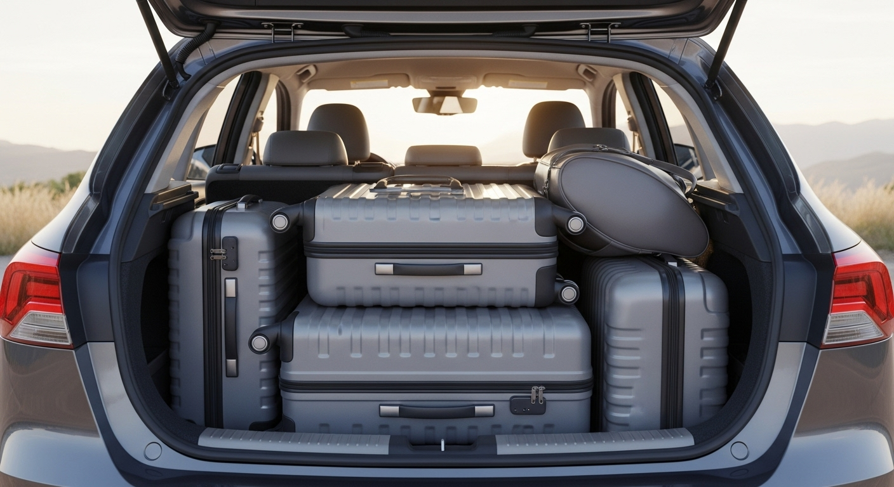
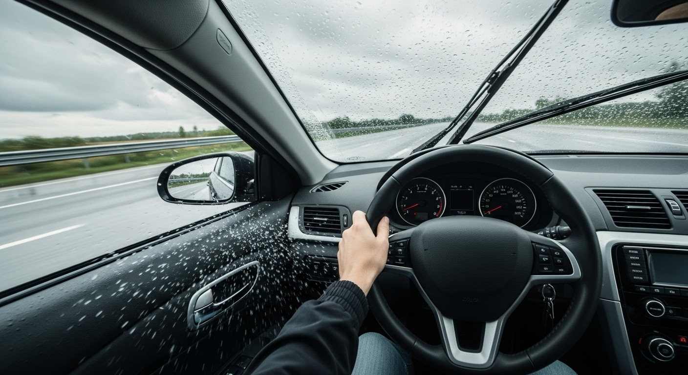

#1 Manter os pneus sempre calibrados
Segundo pesquisa encomendada pela Michelin, 45% dos motoristas rodam com a pressão fora dos limites recomendados. Uma pressão abaixo da recomendada reduz a durabilidade do pneu (em pelo menos 8.000 km), aumenta o consumo de combustível e favorece o risco de explosão e acidentes na pista.
#2 Verificar sempre o nível do fluído do radiador
O radiador resfria o motor do carro fazendo circular o fluido de arrefecimento. Se há vazamento no sistema, o fluido fica no nível baixo, fazendo o motor superaquecer e causando danos potenciais no veículo.
#3 Verificar o nível de óleo
É recomendado verificar o nível de óleo antes de fazer o veículo funcionar pela primeira vez no dia. O óleo serve para lubrificar, limpar, proteger e ainda ajuda na refrigeração do motor. Se estiver muito velho ou abaixo do nível ideal, o funcionamento do carro fica prejudicado e a vida útil da máquina diminui. Faça isso a cada duas semanas.
#4 Abastecer sempre em postos de confiança
Este item é mais que óbvio! Gasolina adulterada prejudica o veículo por inteiro.
#5 Cuidado para não perder a garantia
Fique de olho no prazo da garantia, é sempre melhor para o automóvel ter as peças originais de fábrica.
#6 Conferir parte elétrica
Com o impulso dos avanços tecnológicos, 90% do funcionamento do carro está relacionado à parte elétrica. Falha na buzina, nas luzes e no trio elétrico mostram que algo está desconectado. Fique atento aos mínimos sinais e verifique sempre a parte elétrica para não ter surpresa em trajetos curtos e estradas.
#7 Cuidado com a lavagem do carro
Alguns tipos, como lavagem a seco com esfregões enormes, podem prejudicar a pintura e até a lataria do carro.
#8 Conduzir com precaução
Seu carro não é um super herói. Cuidado na condução evita prejuízos a curto prazo, como pisar bruscamente na embreagem, passar de lado nas lombadas, fazer esforço no volante durante as curvas, arrancar em subidas gastando pneus etc. Cautela em todos os movimentos.
#9 Cautela na hora de estacionar
Estacionar com as rodas viradas pode prejudicar o braço da suspensão.
#10 Fique de olho nos ruídos da suspensão
A suspensão é responsável pela estabilidade do veículo. Ela absorve, por meio dos seus componentes, todas as irregularidades do solo e também mantém as quatro rodas no chão para auxiliar no desempenho do automóvel. É importante fazer alinhamento uma vez por mês e ficar atento aos barulhos estranhos do carro para evitar prejuízos maiores lá na frente.
Veja dicas de cuidados básicos com o carro

Água — Verificar o nível de água no reservatório do radiador (sistema de arrefecimento do motor) e completar se estiver abaixo
do recomendado. O reservatório tem uma marcação do nível ideal, basta completar com água e/ou fluido

Bagagens — Evite levar muitas malas, pois o peso extra significa maiores consumo de combustível e distância necessária para frenagem. Coloque tudo no porta-malas, deixando os volumes mais pesados embaixo. Não deixe objetos soltos no carro, pois eles podem "voar" em manobras bruscas e, consequentemente, ferir os ocupantes

Bateria — A carga deve ser verificada antes de seguir viagem. Em caso de perda de capacidade, troque por uma nova

Chuva — Com a pista molhada, a atenção deve ser redobrada. Evite pisadas bruscas no freio e procure dirigir a uma velocidade
menor e com o motor mais cheio (giros mais altos). Cuidado com as poças na estrada e, em casos de chuvas torrenciais, o ideal é
encostar no primeiro posto de gasolina e esperar diminuir
Combustível — No caso dos motores flex, o ideal é abastecer com gasolina. Isso porque, apesar de ser mais cara, a gasolina
rende mais e o carro fica com maior autonomia (necessita de menos abastecimentos). Com menos paradas, você chega ao seu
destino mais rápido e corre menos risco de ficar sem combustível em estradas com poucos postos de gasolina
Horário — Sempre que possível é aconselhável evitar os horários de pico — final da tarde, começo da noite e primeiras horas da
manhã. Em feriados prolongados, sair nesses períodos é certeza de enfrentar congestionamentos
Crianças — É obrigatório o uso de cadeirinhas ou assentos infantis para crianças menores de sete anos e meio. Use o
equipamento ideal para cada faixa etária. E menores de 12 anos somente no banco traseiro
Documentação — Confira se você está com toda documentação em dia e se não se esqueceu de pegar o RG, a carteira de
motorista e o documento do veículo. Qualquer problema no trajeto pode requerê-los
Entretenimento — Quando há mais de um adulto no carro, procure brincar com as crianças para que a viagem se torne menos
cansativa para elas. Cantar músicas e contar histórias são ótimas opções, assim como jogos eletrônicos e DVDs
Extintor de incêndio — O equipamento vencido rende multa e pode não funcionar corretamente em uma emergência. Leia as
instruções de uso para saber como proceder e verifique a data de validade do produto